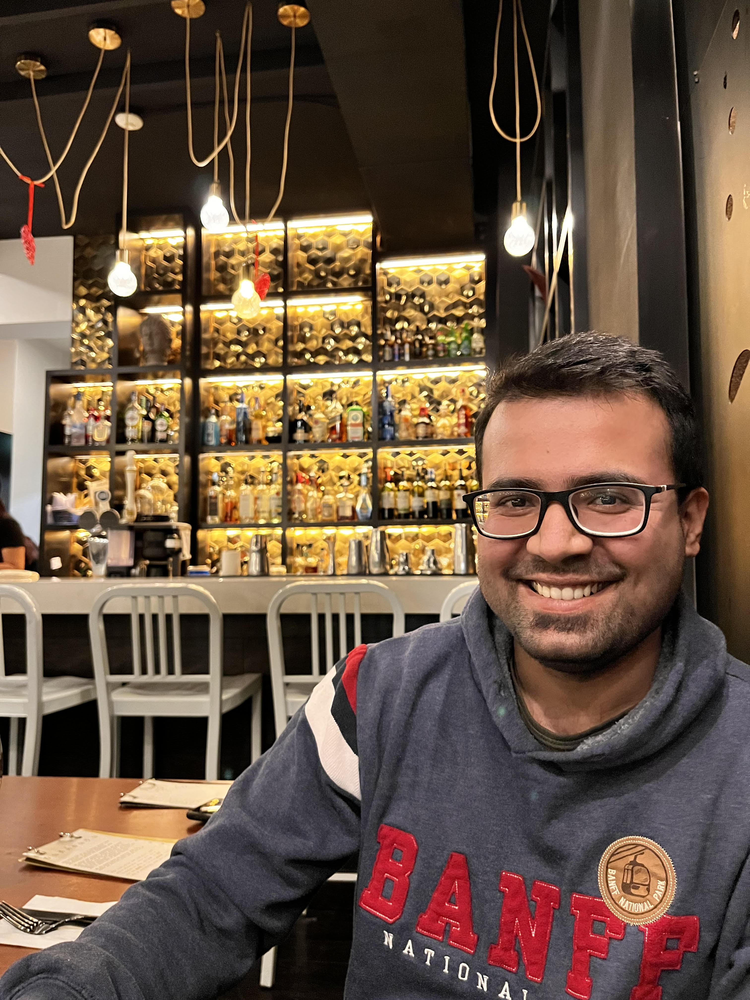

Sunny Kalwani

Summary
I am a highly skilled and motivated Full Stack Web Development Bootcamp
graduate from the University of Western Ontario, with a strong background
in project management across diverse industries, including retail,
healthcare, and public health. As a certified Project Management
Professional (PMP), I have honed my skills in overseeing complex projects
from initiation to completion, ensuring effective planning, resource
allocation, and risk management. My diverse industry background has
equipped me with the ability to adapt quickly to different project scopes
and stakeholder needs, enabling me to deliver successful outcomes. With
expertise in web development, I am adept at leveraging technology to
create user-centric and impactful web solutions. I excel in collaborating
with multidisciplinary teams and stakeholders to drive project success. I
am passionate about leveraging my expertise in both project management and
web development to contribute to meaningful projects that make a positive
impact on the industry and the community.
checkout my portfolio:
https://sunnykalwani.com/
Education
-
Full Stack Web Development Bootcamp, University of Western Ontario,
London, ON Canada
-
Post Graduate Certification in Systems and Software Testing, Fanshawe
College, London, ON Canada
-
Post Graduate Certification in Project Management, Fanshawe College,
London ON Canada
-
Bachelor of Technology in Electronics and Communication Engineering,
Lovely Professional University, Punjab, India
Work Experience
-
Program Assistant - Middlesex-London Health Unit, London ON
January 2022 - Present
-
Collaborated closely with project manager and team members to develop
project plans, establish objectives, and define deliverables and
deadlines on COVID response and Sexual Health Promotion teams.
-
Worked with stakeholders, including healthcare professionals,
community organizations, and government agencies, to facilitate
effective communication, coordinate resources, and ensure the smooth
execution of project activities.
-
Built and maintained relations with partners, supported community
engagement efforts, and ensured the need and expectations of
stakeholders are met throughout the project lifecycle.
-
Assisted the clinical operations team by providing administrative
support, collecting and analyzing data, handling sensitive information
and maintaining ethical standards, organizing meetings, and preparing
reports.
-
Demonstrated adaptability and flexibility in responding to changes in
emerging priorities within the public health landscape.
-
Scheduling Coordinator - Paramed Home and Healthcare, London ON
March 2021 - January 2022
-
Effectively managed and coordinated the scheduling of healthcare
professionals, patients, and resources to ensure efficient and smooth
operations.
-
Collaborated with various stakeholders including healthcare providers,
administrative staff, and clinical supervisors to understand
scheduling requirements and develop comprehensive scheduling plans,
set timelines, and allocate resources accordingly.
-
Managed risks associated with scheduling, such as overlapping
appointments, resource shortages, or unexpected changes, and
implemented mitigation strategies to minimize disruptions.
-
Coordinated with healthcare providers and patients to gather
scheduling preferences, accommodate special requests, and resolve
conflicts.
-
Continuously analyzed scheduling data, identified patterns and
bottlenecks, and proposed improvements to enhance efficiency and
maximize productivity.
-
Demonstrated empathy and professionalism when managing urgent or
sensitive scheduling situations, such as emergency appointments or
rescheduling due to unforeseen circumstances.
-
Department Manager - Walmart, London ON
February 2019 - March 2021
-
Planned, executed, and monitored various projects related to
salesfloor operations, visual merchandising, and product placement,
including optimizing salesfloor layout, enhancing product visibility,
and ensuring department goals are met effectively and efficiently.
-
Collaborated with cross-functional teams, set objectives, developed
plans, tracked progress, mitigated risks, and ensured timely project
completion.
-
Provided regular updates on project status, key performance
indicators, and potential areas of improvement to upper management.
-
Effectively communicated project requirements and expectations to team
members, ensuring clarity and alignment to deliver consistent and
exceptional results.
-
Prioritized tasks, delegated responsibilities, and ensured efficient
utilization of resources to maximize productivity and profitability in
a dynamic and fast-paced retail environment.
Skills
- Front-End Development: ★ ★ ★ ★
- Back-End Development: ★ ★ ★ ★ ★
- Web Design: ★ ★ ★ ★
- Project Management: ★ ★ ★ ★
Awards and Certifications
- Certified Professional in Project Management - Certificate #3235156
- Certified Associate in Project Management - Certificate #2777373
Other